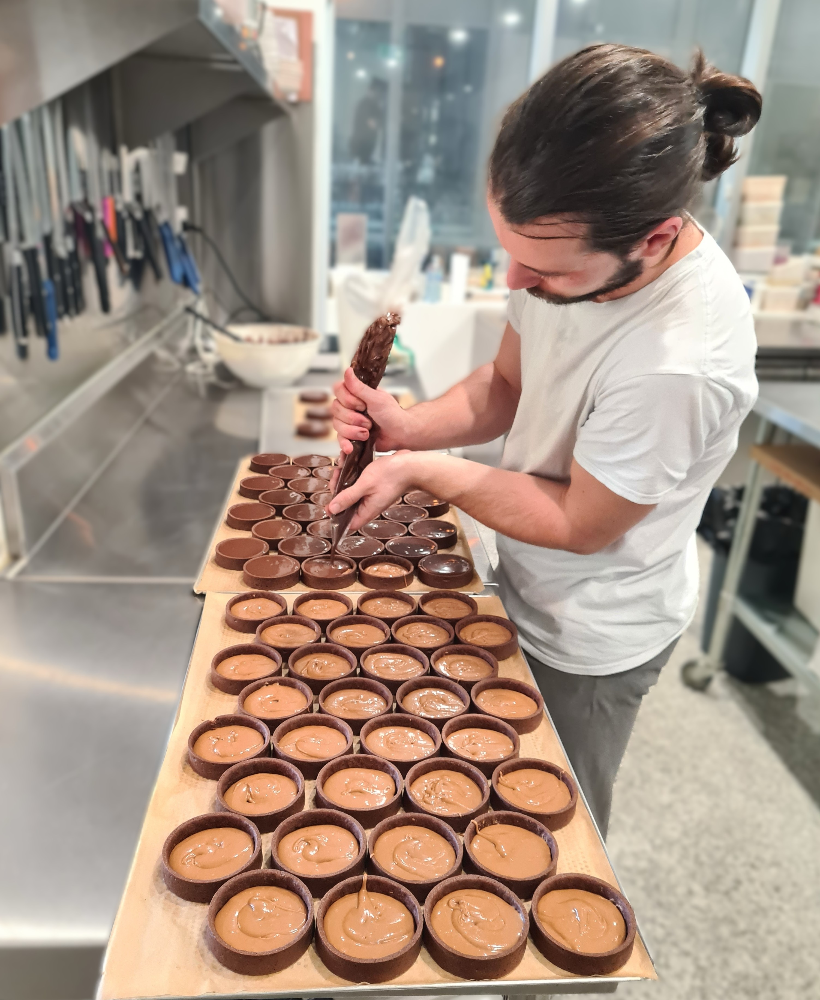

Min passion for madlavning — både det søde og det salte — har fulgt mig, så længe jeg kan huske. Gennem årene har jeg udviklet en særlig forkærlighed for præcision: nøjagtige opskrifter, korrekt temperaturstyring og respekt for de håndværksmæssige teknikker.
I 2024 fik jeg muligheden for at arbejde som chefkonditor for tre franske pâtisserier i Brisbane, Australien. Her forfinede jeg mit håndværk omkring de store klassikere inden for fransk konditori. Samtidig arbejdede jeg med dessertudvikling til en restaurant, hvilket gav mig værdifuld erfaring og styrkede min kreative tilgang.
I 2026 åbner jeg mit eget konditori hjemmefra i Kibæk, hvor alle mine kreationer laves på bestilling. Uanset om det er til fødselsdage, bryllupper, firmaarrangementer eller familiemiddage, tilbyder jeg delikate kager til enhver anledning. En invitation til at opleve og dele den franske konditorkunst og dens søde fristelser.
Jeg lægger stor vægt på det visuelle udtryk og stræber efter elegante kreationer, men smagen vil altid komme først. Mit mål er at tilbyde konditorkager med balance, fine teksturer og nye smagskombinationer — kreationer, der taler til både øjet og ganen.